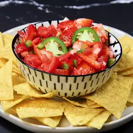

Strawberry Salsa

Description
Honestly I don't know much what else to say about this recipe. It
really is just salsa. It probably is good but I'm just some coder
making a project for my own experience. This is excellent.
Ingredients
- 1 pint fresh strawberries, sliced
- 4 roma (plum) tomatoes, seeded and chopped
- 1 jalapeno peppers, seeded and minced
- 2 cloves garlic, minced
- 1 lime, juiced
- 1 tablespoon olive oil
Steps
-
In a large bowl, combine strawberries, tomatoes, chile peppers,
garlic, lime juice and oil. Toss all together to mix and coat.
Cover dish and refrigerate for 2 hours to chill. Ready to serve!
Return Home